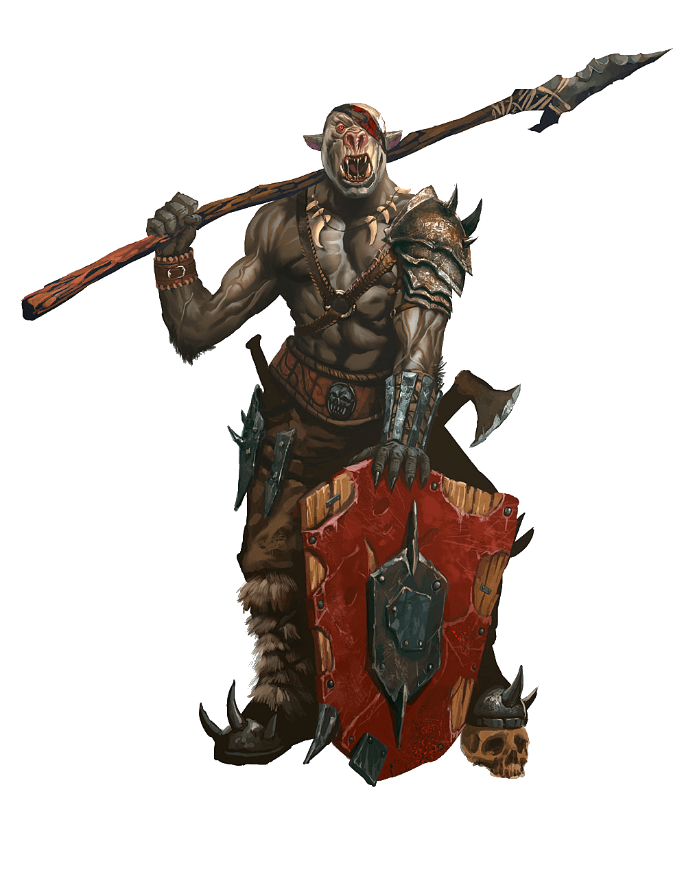

Scarlet Horizons
Orc

• No. Enc: 2d4 (3d10)
• Alignment: Chaotic
• Movement: 30'
• Armor Class: 7
• Hit Dice: 3 (typically 17-20 HP)
• BAB +4
• Attacks: 1 by weapon
• Damage: 2d4 + 2
• Special: knock prone on natural 20 to-hit
• Save: F4
• Morale: 9
• Hoard: 5d4 chroma, 2d4+4 royals, 2d4+8 copper (30% it's Red Cuprous)
Experience Yielded: 300
Orcs are brutes. They flee when reduced to 8 HP or fewer, if possible.